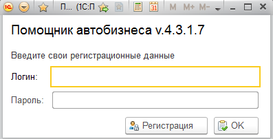
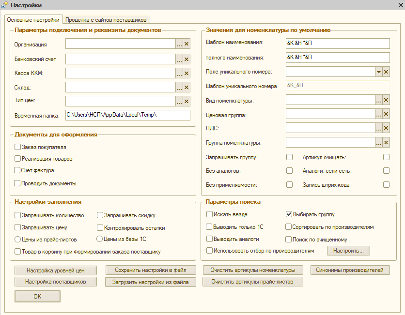
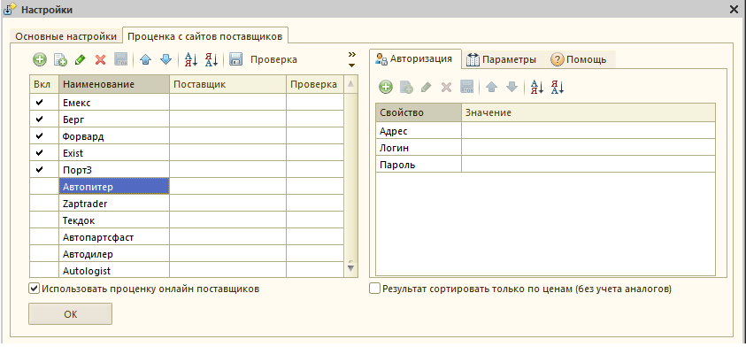
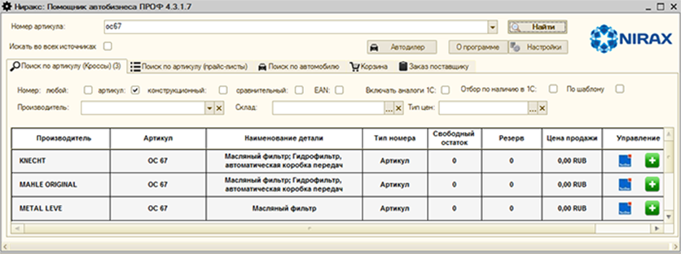
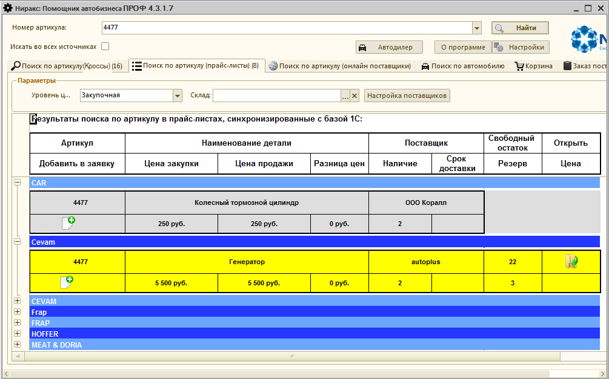
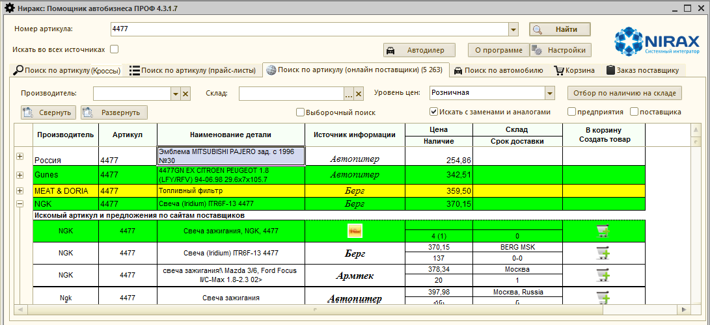
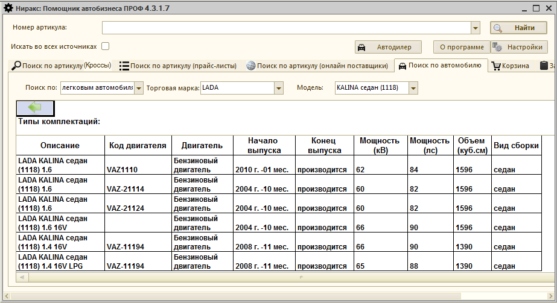
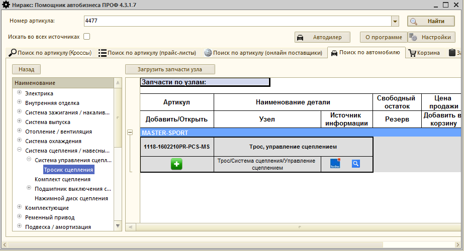
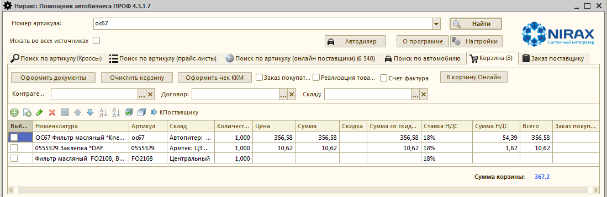
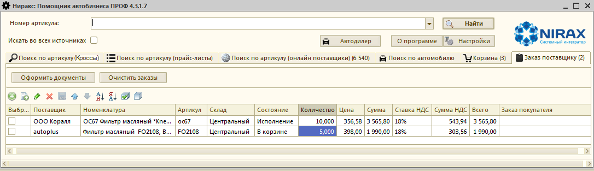

ИНСТРУКЦИЯ ПО ПОДКЛЮЧЕНИЮ И РАБОТЕ МОДУЛЯ
Nirax: ПОМОЩНИК АВТОБИЗНЕСА 4.3.1
для автоматизации работы на предприятиях автобизнеса.
Материалы и информация, приведенные в данном документе, являются собственностью компании ООО «Ниракс» и могут быть использованы исключительно для личных целей приобретателя программного продукта.
Копирование и распространение данного документа и его отдельных частей возможны только с письменного разрешения ООО «Ниракс».
СОДЕРЖАНИЕ
 1. Функционал Nirax: Помощник автобизнеса
1. Функционал Nirax: Помощник автобизнеса
 3. Порядок подключения и настройки
3. Порядок подключения и настройки
 3.1. Подключение и запуск
3.1. Подключение и запуск
 3.2. Запуск настройки
3.2. Запуск настройки
 3.3. Параметры подключения и реквизиты документов.
3.3. Параметры подключения и реквизиты документов.
 3.4. Группа "Документы для оформления"
3.4. Группа "Документы для оформления"
 3.5. Настройки заполнения
3.5. Настройки заполнения
 3.6. Значения для номенклатуры по умолчанию
3.6. Значения для номенклатуры по умолчанию
 3.7. Параметры поиска
3.7. Параметры поиска
 3.9. Настройка работы с онлайн-поставщиками
3.9. Настройка работы с онлайн-поставщиками
 4.1. Поиск по артикулу (кроссы).
4.1. Поиск по артикулу (кроссы).
 4.2. Поиск по артикулу (прайс-листы).
4.2. Поиск по артикулу (прайс-листы).
 4.3. Поиск по артикулу (онлайн поставщики).
4.3. Поиск по артикулу (онлайн поставщики).
 4.4. Поиск по автомобилю
4.4. Поиск по автомобилю
 4.5. Корзина
4.5. Корзина
 4.6. Заказ поставщику.
4.6. Заказ поставщику.
1. Функционал 1С:Помощник автобизнеса
1С:Помощник автобизнеса представляет собой внешний модуль (внешняя обработка), который позволяет интегрировать в ваше решение на базе 1С Предприятие 8 каталог кроссов, прайс-листы поставщиков в формате .xls или .xlsx, а также онлайн поставщиков, сайта которых имеют API интерфейс.
Минимальные требования для работы модуля Помощник автобизнеса 4.3:
 На компьютере, где расположено приложение 1С:Предприятие 8, в котором будет функционировать модуль, обязательно должен быть доступ к сети Интернет;
На компьютере, где расположено приложение 1С:Предприятие 8, в котором будет функционировать модуль, обязательно должен быть доступ к сети Интернет;
 Релиз платформы 1С:Предприятие 8 не должен быть ниже 8.2.19. Приложение может быть как обычным, так и управляемым.
Релиз платформы 1С:Предприятие 8 не должен быть ниже 8.2.19. Приложение может быть как обычным, так и управляемым.
 Для работы онлайн проценки сайтов поставщиков необходима обязательная регистрация на сайте поставщика и выполнение требований по подключение функции web – сервиса сайта, если такие имеются.
Для работы онлайн проценки сайтов поставщиков необходима обязательная регистрация на сайте поставщика и выполнение требований по подключение функции web – сервиса сайта, если такие имеются.
 Наличие нестандартных доработанных функций 1С (или требование их разработать), из-за которых необходимо проводить работы по адаптации модуля - не считаются причиной для отказа в приёмке работ по модулю.
Наличие нестандартных доработанных функций 1С (или требование их разработать), из-за которых необходимо проводить работы по адаптации модуля - не считаются причиной для отказа в приёмке работ по модулю.
 Предусмотрена работа модуля в следующих конфигурациях:
Предусмотрена работа модуля в следующих конфигурациях:
v Альфа-Авто 4.1, 5.0, 5.1 (Автосалон+Автосервис+Автозапчасти);
v Далион: Авто-маркет 1.3; Далион: Авто-бизнес 1.3;
v Розница 2.1; розница магазин автозапчастей 2.1;
v УПП 1.3; ERP 2.0; Комплексная автоматизация 1.1;
v Управление торговлей 10.3, 11.1, 11.2; УТП 2.0 Казахстан.
Модуль будет работать и в других конфигурациях, однако возможно потребуются небольшие доработки.
Основные функциональные возможности 1С: Помощник автобизнеса:
 Поиск автозапчастей по базе кроссов (неоригиналы)
Поиск автозапчастей по базе кроссов (неоригиналы)
 Поиск автозапчастей по базе 1С
Поиск автозапчастей по базе 1С
 Поиск автозапчастей по маркам, моделям и комплектациям автомобилей
Поиск автозапчастей по маркам, моделям и комплектациям автомобилей
 Создание карточки товара в 1С на основе данных из кроссов (аналоги, характеристика, применяемость, картинки)
Создание карточки товара в 1С на основе данных из кроссов (аналоги, характеристика, применяемость, картинки)
 Поиск автозапчастей по маркам автомобилей по базе Автодилер
Поиск автозапчастей по маркам автомобилей по базе Автодилер
 Подключение неограниченного количества прайс-листов поставщиков
Подключение неограниченного количества прайс-листов поставщиков
 Настройка уровней цен для прайс-листов
Настройка уровней цен для прайс-листов
 Работа с онлайн поставщиками (просмотр результатов поиска по сайту, отправка заказа в личный кабинет на сайт)
Работа с онлайн поставщиками (просмотр результатов поиска по сайту, отправка заказа в личный кабинет на сайт)
 Формирование отгрузочных документов в 1С:Предприятие (Заказ покупателя, Реализация товара, Счет-фактура, Чек ККМ).
Формирование отгрузочных документов в 1С:Предприятие (Заказ покупателя, Реализация товара, Счет-фактура, Чек ККМ).
 Формирование документа Заказов поставщику в 1С:Предприятие
Формирование документа Заказов поставщику в 1С:Предприятие
Для работы 1С:Помощник автобизнеса необходимо:
 Файл внешней обработки (1С:Помощник автобизнеса.epf) в архиве
Файл внешней обработки (1С:Помощник автобизнеса.epf) в архиве
 Инструкция(Инструкция.pdf)в архиве
Инструкция(Инструкция.pdf)в архиве
3. Порядок подключения и настройки.
Работа с обработкой 1С:Помощник автобизнеса осуществляется как с обычным файлом. После получения файла обработки необходимо сохранить его в выбранную папку. Запуск обработки осуществляется в конфигурации в режиме 1С:Предприятие через пункты меню – «Файл – Открыть», затем необходимо выбрать обработку и открыть.
Возможна запись в справочник внешних обработок и отчетов, и запуск ее в дальнейшем производить оттуда, стандартными средствами приложения.
При запуске модуль запросит данные для авторизации:

Если вы не зарегистрированы или вам требуется лицензия, то нажмите кнопку Регистрация. Работа с функционалом описана в документации "Регистрация и лицензирование".
Если вы зарегистрировались, но лицензию не получили, то модуль откроется в режиме демонстрации ("ДЕМО"). Для нормального функционирования необходимо произвести настройку и получение лицензии.
Для выполнения настройки модуля нажмите кнопку "Настройка", расположенную справа и вверху формы. При этом отобразится форма "Настройки", содержащая две вкладки: основные настройки и проценки.
На рисунке отображена форма настроек для обычного приложения, для управляемого она полностью идентична. Основные настройки разбиты на группы.

3.3. Параметры подключения и реквизиты документов.
Далее, последовательно рассмотрим основные настройки по группам.
Поля: "Организация", "Банковский счет", "Касса ККМ", "Склад", "Тип цен" определяют значения реквизитов, заполняемых в создаваемых документах по умолчанию. Если документы оформляются на одну организацию, а ключ принадлежит другой, то после получения лицензии организацию можно поменять.
Поле "Временная папка" заполняется автоматически и определяет папку на сервере для временных файлов. Эту папку можно поменять. Важно – папка должна быть доступна для записи.
3.4. Группа "Документы для оформления"
Здесь определяются какие документы будут оформляться во вкладке "Корзина" при нажатии кнопки – "Оформить документы". При этом будут ли проводиться документы при их формировании определяет соответствующий признак.
При помещении товара в корзину или заказ поставщику по умолчанию все заносится в единичном количестве с нулевой скидкой и с ценой, определенной текущим уровнем цен без контроля остатков номенклатуры на складе. Однако эти показатели вы можете изменять непосредственно перед помещением их в корзину, если установите соответствующие признаки.
Какие цены будут использоваться при помещении товара в заказ поставщику из прайс-листов определяет переключатель: Цены из прайс-листов или из базы 1С.
Будет ли помещаться товар в корзину при при помещении данных в заказ поставщик определяет соответствующий признак.
3.6. Значения для номенклатуры по умолчанию
В этой группе определяются значения полей номенклатуры при ее создании. Наименование и полное наименование формируются из шаблонов, заменой символов: &А - на артикул, &К - на очищенный артикул, &Н - на наименование товара, &П - на наименование производителя, полученные из кроссов или сайтов поставщиков.
В некоторых конфигурациях у номенклатуры требуют наличие уникального номера. Наименование этого поля заносится в реквизит настройки: "Поле уникального номера", а шаблон формирования его значения в "Шаблон уникального номера". Внимание !!! Эти настройки заполняются, только если требуется уникальность значение поля.
Значения настроек: "Вид номенклатуры", "Ценовая группа", "НДС", "Группа номенклатуры" определяют присваиваемые значения соответствующих полей номенклатуры. Группу номенклатуры можно запрашивать, для этого требуется установить соответствующий признак.
Артикул очищать – определяет, что артикул номенклатуры будет очищаться от символов – разделителей.
При создании номенклатуры автоматически создаются ее аналоги и определяется ее применяемость, если это допускает приложение. Для отключения этих действий используются признаки: "Без аналогов" и "Без применяемости". Если же требуется запись информации об аналогах, но только той номенклатуры, которая уже определена – используется признак: "Аналоги, если есть".
Если приложение предусматривает ведение штрих - кодов номенклатуры, то их можно записывать, установив признак "Запись штрих-кода".
ü "Искать везде" – определяет, что при запуске на основной форме признак "Искать во всех источниках" будет установлен. Этот признак определяет, что поиск по номеру будет осуществляться сразу в трех источниках: в кроссах, Прайс-листах и онлайн-поставщиках.
ü "Выводить только 1С" – определяет, что при запуске на основной форме признак "Отбор по наличию в 1С" будет установлен. Этот признак определяет, что в результаты поиска не будет включен товар, отсутствующий в справочнике номенклатура.
ü "Выводить аналоги" – определяет, что при запуске на основной форме признак "Включать аналоги 1С" будет установлен. Этот признак определяет, что в результаты поиска для найденной номенклатуры будут включены аналоги из 1С.
ü "Выбирать группу" – определяет, что если в результате поиска по номеру в кроссах выбрано несколько товаров, принадлежащих разным видам продукции, то будет предложено уточнить требуемы вид продукции.
ü "Сортировать по производителям" – определяет, что результаты поиска будут отсортированы по наименованиям производителей, а потом по артикулу. Если этот признак не установлен, то результаты поиска будут отсортированы по наличию товара в справочнике номенклатура, количественному наличию номенклатуры на складе, а лишь потом по наименованию производителя и артикулу.
ü "Поиск по очищенному" – определяет, что поиск номенклатуры в 1С будет производиться по очищенному артикулу, не зависимо от того, как он хранится в самом справочнике. Для выполнения этой функции формируется специальная таблица с очищенными значениями артикула. Использование этой функции может незначительно замедлить поиск в 1С.
ü "Использовать отбор по производителям" – определяет, что результаты поиска будут содержать информацию только из заранее определенного списка производителей. Сформировать и настроить этот список можно, нажав клавишу "Настроить".
ü "Настройка уровней цен" – определяет таблицу содержащую наименования уровней цен и им соответствующую наценку. При поиске по прайс-листам и онлайн - поставшикам вы можете определить с какой наценкой отображать цены в результатах поиска, установив соответствующий уровень цен.
ü "Настройка поставщиков" – определяет таблицу содержащую информацию по прайс-листам: поставщик, путь и имя файла прайс-листа на компьютере пользователя, используемый лист в файле, номера колонок необходимых реквизитов: артикул, наименование, производитель, срок доставки, остаток на складе поставщика, цена товара. Поиск будет производиться только по тем прайс-листам, у которых установлен признак "Вкл". Для выполнения этой настройки и поиска по прайс-листам требуется, чтобы у пользователя был установлен Microsoft Excel.
ü "Сохранить настройки в файл" и "Загрузить настройки из файла" – используются для сохранения и загрузки основных настроек. Используется для переноса настроек на компьютеры других пользователей.
ü "Очистить артикулы номенклатуры" – производит очистку артикулов во всем справочнике номенклатура. Не рекомендуется использовать, если вы храните артикулы не очищенными, то лучше установить признак "Артикул очищать".
ü "Очистить артикулы прайс-листов" – производит очистку артикулов в прайс-листах. Рекомендуется предварительно делать копии прайс-листов. У пользователя должен быть установлен Microsoft Excel.
ü "Синонимы производителей" – определяет таблицу синонимов производителей. Она содержит поля: "Бренд" – это уникальное имя производителя, "Синоним" и "Производитель" – это ссылка на производителя в справочнике. В таблице можно – загрузить синонимы, поставить соответствие между синонимами и производителями, вручную пополнять и редактировать таблицу синонимов, отключать и включать использование этой таблицы. Благодаря использованию этой таблицы не будут создаваться дубликаты номенклатуры, производитель которой назван по разному в разных источниках данных.
3.9. Настройка работы с онлайн-поставщиками
Настройка работы с онлайн поставщиками осуществляться на вкладке «Проценка сайтов поставщиков». Для того, чтобы в основной форме Помощник автобизнеса появилась вкладка «Поиск по артикулу (онлайн поставщики)» необходимо установить признак «Использовать проценку онлайн поставщиков». 
Вкладка настроек содержит две области, левая содержит таблицу поставщиков, вторая настройки текущего поставщика.
Таблица поставщиков. Колонка "Вкл" содержит признак участия данных поставщика в поиске. В колонке "Поставщик" рекомендуется указывать соответствующего ему контрагент, благодаря чему можно будет формировать документ "Заказ поставщику". Колонка "Проверка" предназначена для отображения наличия соединения с сайтом поставщика. Для этого устанавливается курсор на требуемого поставщика и нажимается кнопка проверка. В случае успешного соединения в колонке "Проверка" появится признак соединения.
Область настроек текущего поставщика содержит три вкладки:
Авторизация, Параметры и Помощь.
Авторизация – обязательна для заполнения. Это таблица, которая содержит свойства и их значения, необходимые для авторизации. Обычно это "Логин" и "пароль", но не обязательно – это индивидуальные свойства каждого поставщика. При желании можно в свойствах указывать "Адрес" сайта, но это обычно не обязательно.
В некоторых случаях возможны дополнительные настройки, которые определяются в таблице на вкладке "Параметры", и предусмотрена вкладка "Помощь", где может быть расположена информация по работе с поставщиком,
Ниже приводится список некоторых поставщиков и какие свойства авторизации для их подключения требуется заполнить.
|
Наименование |
Сайт |
Свойства |
Примечания |
|
Емекс |
Логин, Пароль |
Поставщик регистрирует IP | |
|
Берг |
Логин |
Нет корзины – сразу отправляется в заказ | |
|
Форвард |
Логин |
| |
|
Exist |
ЛогинExist, ПарольExist |
| |
|
Порт3 |
Логин, Пароль |
| |
|
Автопитер |
Логин, Пароль |
| |
|
Zaptrader |
КлючZaptrader, АдресZaptrader |
| |
|
Текдок |
Логин, Пароль |
Пароль - должен быть md5, рекомендуем произ-водить на сайте md5.cz. | |
|
Автопартсфаст |
Логин |
| |
|
Автодилер |
Логин, Пароль |
|
индивидуальными параметрами доступа, полученными при регистрации на Значения свойств по каждому подключению заполняются сайте поставщика или у менеджеров поставщика.
Автодилер – не является поставщиком, поэтому у него признак "Вкл" должен быть отключен. Автодилер дает дополнительные возможности по поиску автозапчастей. Можно оформить 14-дневный демо-доступ. После - нужно приобретать доступ к каталогу. Регистрация доступна по ссылке:
http://www.autodealer.ru/soft/online_acat
Изменяя установку признака "Результат сортировать только по ценам (без учета аналогов)" можно изменять сортировку результата поиска.
При запуске обработки открывается основная форма, которая может содержать 5 вкладок, первые три из которых предназначены для поиска по номеру в кроссах, в прайс-листах и на сайтах поставщиков. Признак – "Искать во всех источниках" определяет что поиск по номеру будет производиться во всех трех вкладках. Искомый номер указывается в поле: "Номер артикула". Если не установлен признак "Искать во всех источниках", поиск будет производиться только на текущей активной вкладке. 
4.1. Поиск по артикулу (кроссы).
Поиск в кроссах возможен по артикулу производителя, а также по конструкционному, сравнительному номерам и по номеру штрихкода (EAN), что определяется установкой соответствующих признаков. Кроме того выполняется поиск артикула в 1С. При этом в результат поиска кроме номенклатуры, найденной в 1С, можно включать и ее аналоги (определенные в 1С). Для этого нужно установить признак: "Включать аналоги 1С".
Поиск в справочнике номенклатура можно производить не только на равенство поискового номера, но и на наличие его в тексте артикула (условие содержит). Для этого нужно включить признак: "По шаблону".
Если у вас в справочнике номенклатура артикулы не очищены от символов разделителей, то в настройках установите признак "Артикул очищать".
Если в результатах поиска найден товар, определенный в 1С, то будет отображаться его свободный остаток и резерв на складе, определенном в поле "Склад", а если он не определен, то по всем складам, а также цена с типом цен, определенным в поле "Тип цен". Если товар имеется в наличии – результат будет выводиться на зеленом фоне, если нет – на желтом. Если товар в 1С не определен – на белом фоне.
Установив признак "Отбор по наличию в 1С" – товар, не зарегистрированный в справочнике Номенклатура выводиться не будет.
После получения результата можно изменять значения полей: "Склад" и "Тип цен", в результате чего произойдет перерасчет количественных и ценовых показателей результата поиска. Также можно сделать отбор результатов по конкретному производителю, выбрав его в выпадающем списке "Производитель".
Таблица результата содержит специализированную колонку, которая содержит изображения действий, которые можно выполнить для найденного товара, а именно:
или щелкнуть по артикулу – показать карточку товара, которая содержит ее свойства, конструкционные номера, применяемость и изображения. Для перехода от одного изображения к другому используйте стрелочки влево
- создать номенклатуру. при этом на экран отобразится карточка вновь созданной номенклатуры, куда вы можете внести дополнительную информацию;
- обновить данные номенклатуры из карточки товара, при этом отобразится карточка номенклатуры с обновленной информацией;
- отобразить карточку номенклатуры;
- поместить товар в корзину.
4.2. Поиск по артикулу (прайс-листы).
Перед началом поиска по прайс-листам можно:
v определить наценку, задав соответствующий "Уровень цен";
v определить склад, остатки по которому будут отображены;
v настроить список прайс-листов поставщиков, нажав кнопку: "Настройка поставщиков".
Указав требуемый артикул и нажав "Найти" получим таблицу результата: 
Если товар определен в 1С, то он отображается желтым цветом, независимо от его наличия на складах, если нет – светло-серым.
Для размещения товара в заказе поставщика требуется нажать на изображение:
4.3. Поиск по артикулу (онлайн поставщики).
Перед началом поиска по онлайн поставщикам можно:
v определить наценку, задав соответствующий "Уровень цен";
v определить склад, остатки по которому будут отображены;
v указать, что требуется "Искать с заменами и аналогами" установив соответствующий признак.
Указав требуемый артикул и нажав "Найти" получим таблицу результата: 
Результаты сгруппированы по продукции. Заголовки групп содержат информацию о продукции, поставщике и минимальной цене поставки. Кроме того фон группы зависит от наличия данной номенклатуры: зеленый – если есть в наличии, желтый – отсутствует, белый – этот товар отсутствует в справочнике номенклатура. За счет того, что все группы свернуты – видна вся найденная продукция, а также наличие ее на складе. Нажав на "+" группа раскрывается, где можно более детальней получить информацию о наличии и цене как на своем складе, так и на складах поставщиков. Если номенклатура товара определена, первая строка группы содержит информацию о цене и наличии номенклатуры на складе. При этом можно посмотреть карточку номенклатуры, нажав на изображение . Остальные строки группы содержат информацию поставщиков, отсортированную по возрастанию цен товара. Чтобы заказать конкретный товар нужно разместить его предварительно в корзину, нажав на изображение корзины. Если вы хотите сразу определить требуемое количество товара, контролируя его наличие на складе поставщика – установите соответствующие признаки в "Настройках".
При необходимости можно развернуть и свернуть все группы нажав кнопку "Развернуть" и "Свернуть".
После получения результата можно изменять значения полей: "Склад" и "Уровень цен", в результате чего произойдет перерасчет количественных и ценовых показателей результата поиска. Также можно сделать отбор результатов по конкретному производителю, выбрав его в выпадающем списке "Производитель".
Поставщики очень часто оставляют записи о товаре в прайс-листах, не имея товара на складе. Для того, чтобы эта информация не выводилась на экран предусмотрен отбор по наличию на складе, как "поставщика", так и "предприятия". Для этого установите соответствующий признак и нажмите кнопку "Отбор по наличию на складе".
Очень часто поиск дает очень большое количество результатов, особенно если установлен признак "С заменами и аналогами", при этом тратится много времени на поиск. В системе предусмотрен "Выборочный поиск", который выполняется в 2 этапа. Сначала отображается список продукции данного поискового номера, а произведя выбор продукции, вы получаете конечный результат. Выборочный поиск пока работает только для следующих поставщиков: Берг, Автопитер, Exist, Партком, Иксора, Армтек, Автопартсфаст, Кодавто. Этот список в будущем будет расширен.
Очень часто возникает ситуация, что поисковый номер пользователю не известен. Для таких случаев предусмотрен поиск по автомобилю. Поиск осуществляется в базе данных кроссов и выполняется в несколько этапов:
1. Этап – определение вида поиска. Предусмотрен поиск для легковых, грузовых автомобилей и по коду двигателя. Если текущий вид поиска вас не устраивает, выберите требуемый вид поиска, установив соответствующее значение в поле "Поиск по".
2. Этап - выбор торговой марки производителя. Выбор можно производить хоть в списке, отображенном на экране, хоть в выпадающем списке "Торговая марка", при этом можно вводить с клавиатуры первые буквы, что облегчает выбор .
3. Этап – выбор модели автомобиля или кода двигателя. Выбор можно производить хоть в списке, отображенном на экране, хоть в выпадающем списке "Модель авто" или "Код двигателя", при этом можно вводить с клавиатуры первые буквы, что облегчает выбор .
4. Этап – выбор комплектации модели. Выбор производится только в списке, отображенном на экране.

После того как выбор сделан – на экран отобразится дерево узлов выбранного автомобиля.
Выбрав требуемый узел и деталь узла получим результат, содержащий список деталей, включая аналоги, наличие их на складе и цену продажи. Все операции над товаром аналогичны поиску в кроссах: просмотр карточки товара и номенклатуры, создание, обновление номенклатуры, помещение товара в корзину. Кроме того можно проценить интересующий товар у онлайн поставщиков, нажав на изображение: .
По интересующим узлам можно загрузить номенклатуру в 1С (групповая загрузка), нажав на клавишу "Загрузить запчасти узла". При этом отобразится таблица деталей, которые можно отметить и загрузить в 1С. 
В корзину попадает товар из результатов поиска. Кроме того в Корзину можно добавлять товар непосредственно. Основное назначение "Корзины" – оформление документов покупателям и формирование заказов онлайн-поставщикам.
Для оформления документов требуется уточнить некоторые их реквизиты, заполнив поля: "Контрагент", "Договор", "Соглашение" (для УТ11), "Склад", отметить какие документы требуется оформить: "Заказ покупателя", "Реализация товаров и услуг", "Счет-фактура", отметить какие строки товара войдут в документ (признак "Выбран") и при необходимости скорректировать количественные и ценовые показатели в этих строках. В зависимости от конфигурации наименования этих документов могут звучать по другому, но нести ту же самую смысловую и функциональную нагрузку.
Для оформления вышеуказанных документов нужно нажать кнопку "Оформить документы", для оформления чека ККМ: "Оформить чек ККМ". После оформления заказа покупателя информация об этом заказе будет записана в колонку "Заказ покупателя" для каждого товара из заказа. 
Информацию о товаре корзины можно перенести в "Заказ Поставщику", отметив требуемый товар и нажав кнопку "КПоставщику". Рекомендуется перенос в "Заказ Поставщику" производить после оформления заказа покупателя, тогда эта информация попадет в заказ поставщику.
Для оформления заказа онлайн-поставщику требуется отметить требуемые строки товара, при необходимости скорректировать количество и нажать кнопку "В корзину онлайн". В результате, в зависимости от поставщика, товар попадет в корзину на сайте, где потом придется оформлять заказ, или непосредственно в заказ на выполнение (например, поставщик "Берг"). Информация о товаре, по которому оформлен онлайн заказ – записывается в "Заказ Поставщику". Если у онлайн поставщика не определен контрагент, то нужно будет уточнять Поставщика в заказе.
Если информация в корзине уже не нужна, для группового удаления можно воспользоваться кнопкой "Очистить корзину", при этом будет очищена либо вся корзина, либо отмеченные строки, в зависимости от сделанного выбора.
В Заказ поставщику товар попадает из поиска по прайс-листам, из корзины, при оформлении онлайн-заказа и может быть добавлен непосредственно. Основное назначение "Заказа поставщику" – оформление документа "Заказ поставщику".
Кроме того можно отслеживать и фиксировать выполнение каждого заказа. Товар, для которого оформлен заказ или онлайн-заказ установить в колонке "Состояние" значение "В корзине". Если же заказ уже отправлен на выполнение: "Исполнение". Если же состояние заказа неизвестно: "Не определено". 
Для оформления "Заказа поставщику" нужно отметить требуемый товар в колонку "Выбран", проверить заполнение данных об этом товаре и нажать кнопку "Оформить документы".
Если информация в "Заказе поставщику" уже не нужна, для группового удаления можно воспользоваться кнопкой "Очистить заказы", при этом будет очищена либо все заказы, либо отмеченные строки, в зависимости от сделанного выбора.